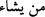

buyurmuştur.
105. (Ey mü’minler!) Ehl-i kitaptan kâfirler ve putperestler de Rabbinizden size
bir hayır indirilmesini istemezler. Halbuki Allah rahmetini dilediğine verir. Allah
büyük lütuf sahibidir.
Yahûdîlerden bir gurubu mü’minlere sevgi gösterisinde bulunduğundan müslümanların
bir kısmı, yahûdîlerin kendileri için hayır istediğini sanıyorlardı. Bu âyet, yahûdîlerin
tavırlarında samîmî olmadığını bildirmek için inmiştir.
“Vedd” (
) temennî ile bir şeyi sevmektir. Sevmenin izâlesi hoşlanmamak,
istememektir, âyette de bu mânâya kullanılmıştır.
“Min” ( ) cins bildirmek içindir. Çünkü inanmayanlar tek cinstir ve bunlar ehl-i
kitap ve müşrikler olmak üzere iki gruptur. Âyetteki mânâ: Küfredenler, ki onlar da ehl-i
kitâb ve müşriklerdir, size rabbınızdan bir hayır gelmesinden hoşlanmazlar. Bu âyetteki
hayırdan murâd Hz. Peygamber’e inen vahiydir. Çünkü peygamberlere inen hayr, bütün
ümmete inmiş sayılır.
“Min hayr” (
) nâib-i fâildir, “Çok hayra müsteğrak olmak” demektir. Hayırdan
maksad, Rabbinizden gelen vahy, Kur’ân ve zaferdir.
“Min” ( ) “İbtidâ-i gâye” içindir. Bu duruma göre mânâ: Onlar kendilerini vahye
daha lâyık görüyorlar ve bu yüzden müslümanları kıskanarak onların peygamberine
vahy gelmesinden hoşlanmıyorlardı. Yahûdîler, kendilerini ehl-i kitap, peygamber nesli,
vahy menzilinde yetişmiş insanlar olarak görüyor, müslümanlara: “Siz ümmîsiniz”
diyorlardı.
Müşrikler ise, dünyevî liderliklerin mal ve makam gibi zâhirî sebeblere bağlı
olduğuna bakarak, peygamberliğin de öyle olacağını düşünüyorlardı. Bu yüzden şunu
söylediler: “Bu Kur’ân şu iki şehirden bir büyük adama indirilseydi ya!” (ez-Zuhruf,
43/31)
Müşrikler, peygamberliğin Tâif’te bulunan Nuaym b. Mes’ûd es-Sakafî ile
Mekke’deki Velîd b. Muğîre’den birine gelebileceğini temennî etmekteydiler. Allah
Teâlâ âyetin bu kısmıyla “Kur’ân niye onlara indirilmedi?” diyenlere cevap
vermektedir: “Allah, rahmetini dilediğine tahsîs eder.” “Hassa” (
): Bir kimseye
bir şey tahsîs etmektir. “İhtassa” (
): Bir kimseyi başkalarında bulunmayan bir
özellikle yüceltmektir. “Men yeşâu” (
)’nun mef’ûlü mahzûftur.
Rahmet; nübüvvet, vahiy, hikmet ve yardım demektir. Allah rahmetini sâdece